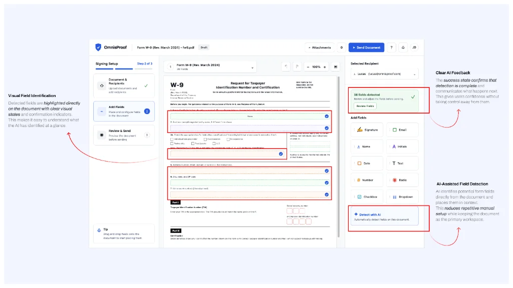

Legal teams shouldn't have to wrestle with complicated workflows to send a document for signature. The task is straightforward, yet it often involves multiple steps, hidden documents, and repetitive field placement. All of that adds friction before a document reaches the signer.
I redesigned OmnisProof's signing setup so legal teams move from document to signature with less effort: upload, field placement and AI assistance in one self-serve flow.
Product
OmnisProof, part of the Omnis legal AI suite
Role
Product Designer / Design Engineer
Scope
Workflow redesign, AI field detection, prototyping
Users
Lawyers, paralegals, legal assistants
AI field suggestions~72%
Accepted without edits across 6 internal prototype walkthroughs.
Setup screens4 → 1
A 4-step modal wizard became one guided page where the document never leaves view.
End-to-end workflow11 → 8
Steps to execute a contract, moving from 6 disconnected tools to 1 system.
The problem
Sending a document for signature took a 4-step modal wizard, hidden documents and repetitive field placement before it reached the signer.
What I did
Redesigned setup as one guided page where the document stays in view, and added reviewable AI field detection: the AI proposes fields, the user approves them.
Where it stands
Shipped. Contract execution went from 11 steps to 8, and about 72% of AI field suggestions were accepted without edits in 6 internal prototype walkthroughs.
01What we're building
Making document signing simpler from the very first step.
OmnisProof is a dedicated e-signing platform built for high-velocity legal workflows. We eliminated disjointed modal wizards and automated manual field placement into a single guided workspace. The redesign tackles three major bottlenecks across the preparation lifecycle.
01
Too many steps before sending a document
The problem
Preparing a document for signature involved moving through multiple screens and disconnected steps. Users had to work through the setup process before they could place signature fields.
What we're building
A single, guided workspace where users can upload a document, configure signing details, and prepare it for sending, all in one continuous flow.
02
Manual field placement slows everything down
The problem
Placing signature fields manually across lengthy legal documents is repetitive, time-consuming, and easy to get wrong. Users had to scan documents to determine where each person needed to sign.
What we're building
AI-assisted field detection that identifies potential signing locations and suggests where fields belong, while keeping users in control of reviewing and confirming them.
03
Making document preparation easier to manage
The problem
Legal teams work with different document types, signing requirements, and workflows. The experience needed to support these variations without adding more complexity.
What we're building
A flexible signing experience that supports document uploads, reusable templates, and existing files, giving teams more ways to start and complete their signing workflow.
The goal
Turn document signing from a multi-step chore into a straightforward, guided experience that legal teams can complete with confidence.
02The product
The document execution layer inside a legal AI ecosystem.
OmnisProof is the document execution layer of the Omnis legal AI ecosystem. It turns a drafted agreement into a signed, filed legal record: prepare, assign signers, place fields, send and track, without leaving the platform.
It sounds like the easy part. But drafting, matter tracking and client portals all produce documents that end up here. If signing is slow or error-prone, it undermines everything upstream.
Engineering had shipped a working MVP: a 4-step wizard (General Info → Add Signers → Add Fields → Distribute) modelled on e-signature admin panels. It covered every setting, but not how lawyers work. The document didn't appear until step three.
Why this became urgent
Leadership pitched OmnisProof as a full DocuSign replacement. That pitch fails if our setup is slower and clumsier than DocuSign's. When I took over, that gap was the most-cited risk in product reviews.
03Why we solved this
We didn't have time for a full research cycle. We looked at the strongest signals available.
No research budget and no access to law firms before launch. So I combined all the signals that existed: walkthroughs with 2 lawyers and a paralegal, the PM's testing notes, a teardown of 5 competitors, and G2 & Capterra reviews.
The same pattern kept showing up across all sources:
Users could complete each step of the wizard but lost track of which document they were configuring
Manual field placement was the single largest source of both time spent and errors made
Reviewers of competitor tools described documents sent with a missing field or the wrong recipient, discovered only after the fact
Walkthroughs surfaced it, the PM's testing reproduced it, and reviews showed a category-wide failure mode nobody had solved. That's why it beat other roadmap items.
Target users · one person, three job titles
Lawyers
Prepare agreements for signature and are accountable if anything goes out wrong.
Paralegals
Do most of the day-to-day document prep across many matters.
Legal assistants
Often prep the document on an attorney's behalf, then hand it back to send.
At Omnis, "user," "attorney," and "legal team" are used interchangeably in internal docs. They all mean the same person here: whoever is sitting in OmnisProof getting a document ready to send.
Evidence limitationMy primary evidence came from internal team members standing in for these users, a real limitation I address in the final thoughts (§09).
Problem statement
Legal teams need a way to prepare and send documents for signature that doesn't require them to become experts in field placement, or lose sight of the document itself while configuring it.
Before · MVP wizardMultiple screens, no document context, manual fields
01
General Info
Enter document details and settings.
Document not visible until step 3
02
Add Signers
Add recipients and set their roles.
Multiple steps create friction
03
Add Fields
Place signature, initials, date and other fields by hand.
Manual field placement is time-consuming
04
Distribute
Review and send the document.
Errors often discovered after sending
After · document-firstUpload, AI-suggested fields, review and send in one flow
01
Upload document
Add your document and see it on screen.
Document visible from the start
02
AI suggests fields
AI detects fields and suggests them.
AI reduces manual work
03
Review & edit
Review, adjust or add fields as needed.
Fewer errors with built-in guidance
04
Add signers
Assign recipients and set their roles.
Streamlined signer setup
05
Send
Finalize and send the document.
Faster, more confident sending
04Research
Configuring a document correctly was the hard part. Getting it into the system was easy.
I ran a structured teardown of DocuSign, Adobe Sign, Dropbox Sign, PandaDoc, and Documenso: their public documentation, review-site screenshots, and (where available) free-tier trials.
What competitors do well
Where they fall short
Document upload and recipient invitation are fast and well-documented across all five platforms.
Field placement is manual: click, drag, resize, repeat, for every signature block and date field on every page.
DocuSign offers limited auto-placement for a narrow set of pre-formatted templates.
Outside that narrow case, nothing in the category offers reviewable AI assistance for field detection.
Send flows are optimized to be fast: most competitors market “send in under a minute.”
That speed costs verification. G2 reviews describe documents sent with a missing field or wrong recipient, caught only after the fact.
Pattern across all five: getting a document in is solved; making it correct once it's there is not.
Key insight: getting a document in is solved everywhere, including our MVP. The unsolved part sits between "uploaded" and "ready to send": field placement, recipients, and catching mistakes before they go out.
That reframed the direction of the whole project: let the system handle more of the setup, and let users review and correct only what needs their attention, instead of making manual configuration slightly faster.
Mapping the fragmented baseline against the streamlined workflow
Baseline reality11 steps across disconnected tools11 steps6 tools7 tool switches
Assign signers, roles, signing order and authentication.
04
Review & approve
Review internally before anything is sent.
05
Send for signature
Email signers with built-in notifications.
06
Track progress
Real-time status, reminders and signer activity.
07
Completed
Every party has signed.
08
Store & manage
Audit trail, document history and matter records.
From 11 steps across 6 tools to 8 steps in one system. Before OmnisProof, legal teams bounced between Word, email, local folders, an external e-signature platform and practice-management software to execute a single contract.
05Constraints & decisions
Not "redesign the interface": decide which complexity stays with the user, and which the system should absorb.
Constraint 01
Field placement was required, but too heavy to leave manual
Why this mattered
Every document needs signature, date, name, and initials fields placed correctly before it can go out. This step couldn't be removed, but making users place every field on every page by hand was the largest time cost we'd identified.
Decision
Turn field placement from a manual task into a system-assisted one: AI detects and proposes placement, the user reviews and corrects only where needed. Deep dive 01 →
Constraint 02
The 4-step structure mapped to something real, but hiding the document behind it didn't
Why this mattered
"Who's involved → what goes where → is it ready to send" is how document prep works. The three-stage logic was fine. Presenting each stage as a separate full screen hid the document being configured.
Decision
Keep the underlying stages, rebuild the presentation as one page: the document stays visible at all times, with a persistent step tracker and a side panel that changes per stage. Deep dive 02 →
Constraint 03
No direct access to external users
Why this mattered
Each decision below needed some form of validation, but law firms weren't reachable pre-launch. Relying only on internal opinion risked designing for people who already trust the product.
Decision
Validate with internal legal professionals as a proxy, cross-check against competitive review-site complaints as external signal, and label each claim with its actual confidence level instead of letting it read as more validated than it is.
Constraint 04
The fix had to ship inside the existing timeline
Why this mattered
The competitive gap was already being cited as a risk in product reviews. A ground-up redesign of the entire setup experience wasn't realistic in the time available.
Decision
Scope to the two moments with the clearest evidence of friction (field placement and the wizard structure) rather than trying to fix every part of document prep at once.
06Deep dive 01 · AI-assisted field placement
How do you make legal professionals trust an AI that places their signature fields?
Placing every field by hand, for every recipient, took the largest share of prep time and caused each placement mistake we saw. Automating was easy. Trust was hard: a wrong AI guess sends a contract to the wrong person.
Testing three ways to introduce AI field detection
Iteration 1 · rejected
Automatic, silent placement
AI detects and places each field the moment a document is uploaded. No review step: the fields are there, ready to send.
Why it failed: a lawyer on our team moved each AI-placed field, even the correct ones: "I didn't see it place them, so I don't trust them." The checking work just moved somewhere with no support.
Iteration 2 · rejected
Chat-based AI assistant
A conversational interface where the user could type "place a signature field for Lucas on page 3" and the AI would execute it.
Why it was rejected: field placement is one-time setup, not a conversation. Typing instructions added a step and a new pattern to learn, for a task people want done in seconds.
Final · shipped
Inline, reviewable "Detect with AI"
One button inside the existing field panel. Clicking it places suggested fields on the document, using the same drag-and-edit interaction as a manually placed field.
Why it worked: the placement is visible as it happens, each suggestion is editable or deletable with no new interaction to learn, and there's no separate "accept" step. The AI proposes and the user decides, using tools they already know.
The shipped loop: the AI proposes, the user disposes
Iteration 1 · silentAI places everything → user re-checks everything
~28% of suggestions adjusted · each one stays editable

AI-assisted field placement in action. "Detect with AI" scans the document in context, identifies 38 form fields, and renders green visual confirmations with reviewable states so attorneys maintain 100% control without manual fatigue.
Designing for failure and non-standard inputs
Edge case
Non-standard or custom field types that fall outside the seven types the model recognizes (signature, date, name, initials, title, email, text) aren't guessed at: they're left for manual placement using the same field library, with no error state implying something went wrong.
Edge case
Scanned documents with non-selectable text can't be reliably parsed by the detection model. "Detect with AI" stays visible but shows a clear inline message explaining why detection isn't available for this file, instead of failing or returning wrong guesses.
Edge case
A user rejects most suggestions on one document. The next document still gets a fresh detection pass. The real risk is someone deciding "the AI doesn't work" and switching it off. Trust recovery is untested, so I flag it as open.
Observed walkthrough validation
~72%
Suggestions accepted without edits
Across 6 internal prototype walkthroughs. The 28% that got adjusted is why each suggestion stays editable instead of final.
5 / 7
Standard field types reliably auto-detected
Signature, date, name, initials, and title. Email and free-text fields still default to manual placement.
1 → 0
Participants who distrusted AI output after the redesign
The same lawyer who moved every field under silent automation left correct suggestions untouched once placement became visible.
Honest confidence levelThese numbers come from six internal walkthroughs with legal professionals inside our own organization (not a controlled study, not external users, not production telemetry). I treat them as directional evidence the detection is useful, not as a validated product metric, and I say that when asked.
directional, not a product metric ↗
07Deep dive 02 · Collapsing the setup wizard
The signing setup was a 4-step modal wizard. I collapsed it into one page without losing control.
The MVP stacked four full-screen steps as a modal over the document list, each with its own settings. The document wasn't visible until step three, so people lost track of what they were setting up.
BeforeAfter
Before · 4-step modal wizard: General Info, Add Signers, Add Fields, Distribute Document. The document is a thumbnail on the left, not the focus of the screen.
After · 1 guided page: the document is the center of the screen the entire time. Recipients, fields, and progress live in persistent side panels.
Same three stages, one page instead of four screens
MVP wizard4 modal screens → document hidden until step 3
01
General Info
02
Add Signers
03
Add Fields (document visible)
04
Distribute Document
05
Wrong signer? Back through every screen
Shipped · 1 guided pageDocument stays centred → side panel swaps per stage
01
Open the document
02
Document & Recipients
03
Add Fields: drag or Detect with AI
04
Review & Send
05
Sent, no state lost
Step tracker: jump back to any stage without leaving the page
Left: the 3 stages kept, now as a tracker instead of screens.
Centre: the document never leaves the middle of the screen.
Right: “Detect with AI” proposes fields; the user reviews.
Exploring layouts for progressive disclosure
Iteration 1 · rejected
Delete the steps
Strip the wizard down to one dense screen: recipients, fields, document preview, and settings all visible at once. Fewer screens, assumed to mean faster.
Why it failed: a lawyer called it "a cockpit", and neither tester knew where to start. Removing screens doesn't remove complexity; it squeezes it onto one screen.
Iteration 2 · rejected
Merge General Info into Add Signers
A smaller fix: combine the first two steps into one, going from four screens to three, keeping the rest of the wizard structure intact.
Why it was rejected: it reduced the click count but didn't touch the actual complaint: the document was still hidden until step two of three. A marginal improvement to the wrong metric.
Final · shipped
Same 3-stage logic, one persistent page
Keep Document & Recipients → Add Fields → Review & Send as the underlying structure, but render it as three states of a single page: a persistent step tracker on the left, the document centered, and a right-hand panel whose content changes per stage.
Why it worked: the document never disappears behind its own configuration. The underlying logic stayed the same; only how much of it stayed visible changed.
Replacing 4 fragmented screens with 1 persistent workspace
The redesign removes the cognitive disconnect by keeping the document visible at all times, so users never configure blind.
Dimension
Before · 4-step wizard
After · 1 guided page
Document visibility
Hidden behind modal until Step 3
100% visible from second zero
Field placement
100% manual drag & drop
AI detection + 1-click review
Navigation friction
4 disconnected full screens
1 persistent page + 3 panel states
Error recovery
Back-button loop across screens
Instant inline step switching
User mental model
Felt like "a cockpit" / form filling
Direct document interaction
Handling changes and missing fields
Edge case
A recipient is added after fields are already placed. Any field already assigned to a now-invalid configuration is flagged inline in the field panel instead of being reassigned, so the user makes the call on where it belongs.
Edge case
A required field is missing at Review & Send. Step 2 gets flagged and Send stays disabled with an inline reason: the same error pattern as field mapping, so users learn one style.
What survived from the original wizard, on purposeThe three-stage logic itself. Deleting steps to "reduce friction" is a common trap: the wizard's sequence (who's involved → what goes where → is it ready) was correct information architecture. The failure was in the presentation, not the sequence, so I kept the sequence and rebuilt the presentation.
The same two lawyers who were lost in both the old wizard and the "cockpit" completed the new flow without a single question. Small sample, but the same people and task, before and after.
08Outcome
The complexity didn't disappear. It moved from the user to the system.
The two heaviest jobs moved to the system: AI proposes fields, and the three stages live on one page where the document never leaves view. Users now review and correct instead of configuring blind.
Category
What we have
Validated
6 internal prototype walkthroughs with lawyers and legal assistants inside our organization. Both redesigns tested against the same two participants before and after. ~72% of AI field suggestions accepted without edits. The participant who distrusted silent AI placement left correct suggestions untouched after the redesign.
Qualitative
"I didn't see it place them, so I don't trust them" (on the rejected silent-AI iteration). "This looks like a cockpit" (on the rejected single-screen iteration). Both quotes came from the same two-person internal test group and shaped the shipped design.
Not yet validated
Production usage data (setup completion rate, time-to-complete, support ticket volume): the feature is live but hasn't been in market long enough to generate meaningful telemetry. External law firm feedback: still untested outside our own organization.
09Final thoughts
Designing for confidence as well as completion.
Redesigning OmnisProof taught me to simplify a workflow by making each step clear, purposeful, and easy to recover from.
Legal teams need to send documents quickly and need confidence that the right document reaches the right people, with the right fields, without extra back-and-forth.
01
Put the document at the center
Users should keep sight of the thing they're working on. Keeping the document visible turned a configuration-heavy process into an understandable workspace.
02
Let AI handle the repetitive work
AI is most useful when it removes tedious tasks while keeping users in control. Suggested fields reduce manual effort, but review and approval remain with the person preparing the document.
03
Clear structure over false simplicity
The signing workflow involved documents, recipients, fields, permissions, and delivery settings. I organized that complexity so users could move through it.
Before vs. after. Collapsing the multi-step configuration wizard into an intuitive, document-centered signing workspace with AI field detection.
What I'd explore next
With more time and access to real usage data, I'd focus on:
Testing the redesigned workflow with external law firms.
Understanding how users interact with AI suggestions over time.
Exploring smarter detection for complex document fields.
Measuring setup time, completion rates, and correction patterns.
Closing thought
Great product design doesn't remove complexity. It makes complexity feel effortless.
OmnisProof gave me a chance to rethink how legal teams prepare documents: keep the essential steps and make each interaction clearer, more intentional, and easier to trust.
Less manual work, more clarity, and more confidence in each signature. That's the kind of experience I believe legal technology should deliver.
10Questions I expect
Anticipated questions on these two problems.
Why only two problems instead of the whole product?
Going deep on two hard problems shows how I think better than a product tour. Both had a clear arc: a rejected first attempt, evidence of why, and a validated fix.
How confident are you in the 72% AI-acceptance number?
Moderately. It's from six internal walkthroughs with legal professionals in our own organization, not a controlled study or production telemetry. I treat it as directional evidence the detection is useful, not a validated product metric, and I say that up front.
Why didn't you just delete the wizard's steps to simplify it?
I tried it first: one dense screen with everything visible. A tester called it "a cockpit." The three stages were the right structure; hiding the document behind them was the mistake.
What would you do differently with more time or budget?
Test with external law firm users instead of internal proxies, and instrument real production metrics instead of relying on six walkthrough sessions. That gap, between what I believe and what I can prove at scale, is my answer.